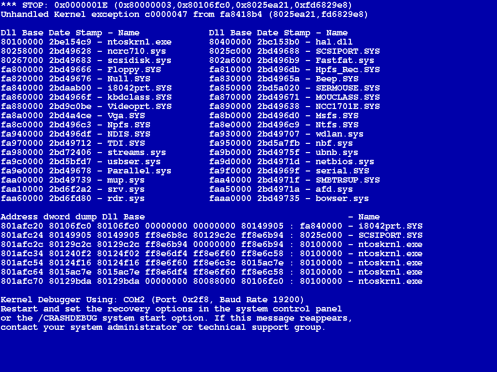

Algorismes
El desenvolupament d’una aplicació informàtica es pot dividir en un conjunt de fases que prenen com a punt de partida la detecció de la necessitat de fer un programa, i que finalitzen quan es comprova que aquest ja funciona correctament. Des d’un punt de vista simplista, un cop el programa està essent utilitzat, es podria considerar que la feina del desenvolupador ha acabat. Ara bé, moltes vegades es pot donar la circumstància que durant l’ús es detectin possibles canvis o millores que caldria fer. En aquest cas, caldrà recular a alguna de les fases prèvies i treballar-hi fins a disposar d’una nova versió del programa.
En aquest darrer cas, apareix un cicle que fa que l’aplicació informàtica es trobi en contínua evolució. Per això s’acostuma a parlar del cicle de vida d’una aplicació informàtica.
En aquest apartat s’explicarà en què consisteix cadascuna de les fases d’aquest cicle de vida, enumerades tot seguit:
- Definició del problema.
- Disseny de l’algorisme.
- Implementació del programa.
- Verificació i proves.
- Posada en marxa i manteniment.
Definició del problema
La definició del problema és el primer pas del procés que cal seguir per resoldre’l. Cal tenir molt clar què és el que s’ha de resoldre. I això implica una molt bona comunicació amb l’organització que encarrega la realització del programa i amb els usuaris finals, establint amb precisió i claredat els objectius que es volen assolir.
Normalment, el punt de partida s’estableix quan un client (ja sigueu vosaltres mateixos o una tercera persona), detecta que necessita resoldre diverses vegades un problema de certa complexitat i decideix que serà molt més fàcil si pot automatitzar les operacions mitjançant un programa. Arribats a aquesta conclusió, cal començar per la realització d’una anàlisi del problema, que de vegades pot dur bastant temps, ja que el problema pot ser difícil de comprendre o el client pot no tenir del tot clar què vol.
Un cop el problema està definit, cal dur a terme una anàlisi funcional. Aquesta no és estrictament responsabilitat del programador, raó per la qual no se’n farà èmfasi en aquest apartat, però això no implica que no n’hàgiu de ser coneixedors. A fi de comptes, els programadors sereu els encarregats de desenvolupar els programes resultants d’aquesta etapa.
En aquesta anàlisi, s’acostuma a fer el següent:
- Parlar amb tots els usuaris implicats de manera que aconseguim tenir tots els punts de vista possibles sobre el problema. Si vosaltres sou els usuaris la feina és més senzilla, evidentment.
- Donar totes les solucions possibles amb un estudi de viabilitat, considerant els costos econòmics (material i personal).
- Proposar al client, futur usuari de l’aplicació, una solució entre les possibles, i ajudar-lo a prendre la decisió més adequada.
- Trencar la solució adoptada en parts independents per dividir les tasques entre un equip de treball.
Com a resultat, es disposarà d’una idea clara de què cal fer i amb quins recursos. Només llavors és el moment de veure com s’ha de fer, en forma d’una aplicació informàtica.
Disseny de l’algorisme
Un cop establert quin és el problema que cal resoldre, és el moment d’aturar-se a reflexionar sobre quina estratègia caldrà seguir per resoldre’l mitjançant un programa i quina forma haurà de prendre el codi font. Per establir-ho, cal recordar clarament què pot fer un ordinador (quina mena d’ordres pot acceptar) i què hi ha dins d’un programa. Pel que fa a què pot fer un ordinador, bàsicament es tracta de processar dades. Quant a la composició d’un programa, es pot considerar que hi ha dos elements fonamentals que col·laboren per dur a terme la tasca encomanada. D’una banda, hi ha les dades que cal processar, ja sigui directament en forma de literals o introduïdes per l’usuari. D’una altra banda, el conjunt d’ordres que es dóna a l’ordinador, les instruccions, per tal que es produeixi aquest procés de transformació.
Dins d’un programa es representarà el que es coneix formalment com a algorisme: un mecanisme per resoldre un problema o una tasca concreta, descrit com una seqüència finita de passes.
Què és un programa
Una definició clàssica és: Programa = dades + algorisme.
Si bé tots els programes contenen algorismes, traduïts en un seguit d’instruccions, aquest concepte no està lligat exclusivament a la programació. Qualsevol descripció composta per un seguit de passes que cal seguir ordenadament per assolir una fita és un algorisme. Fora del món dels ordinadors, un dels exemples més clars són les receptes de cuina. Per exemple, el conjunt següent de passes podria ser l’algorisme per fer un parell d’ous ferrats:
- Agafar dos ous de la nevera.
- Si no n’hi ha, anar-ne a comprar.
- Agafar sal i oli de l’armari.
- Si no n’hi ha, anar-ne a comprar.
- Posar oli a la paella.
- Posar la paella al foc.
- Mentre l’oli no estigui calent, cal esperar.
- Per cada ou cal fer el següent:
- Trencar-lo i posar el contingut a la paella.
- Posar-hi sal.
- Mentre els ous no estiguin fregits, cal esperar.
- Treure els ous de la paella i servir-los.
En qualsevol cas, el fet primordial és que, tant per establir què ha de fer una persona com un ordinador, abans cal pensar exactament com cal dividir la tasca en accions individuals i quin ordre han de seguir. Per tant, una de les tasques primordials del programador abans de ni tant sols començar a escriure codi font és dedicar un temps a reflexionar i a dissenyar un algorisme que serveixi per dur a terme la tasca donada per la definició del problema. Aquesta fase és molt important, ja que condicionarà totalment la fase d’implementació. Si l’algorisme és incorrecte, haureu perdut temps i esforç creant un codi font que no fa el que voleu.
Programació estructurada
Hi ha diferents aproximacions per dissenyar algorismes. La que aprendreu en aquest mòdul és l’anomenada programació estructurada. En aquesta, les passes d’un algorisme es divideixen en diferents blocs d’instruccions, cadascun triat únicament entre els tres tipus d’estructura següents:
- Estructura lineal o seqüencial: les instruccions s’executen en el mateix ordre en què s’han escrit. Aquest és el que heu vist fins ara. En l’exemple de l’ou ferrat, equivaldria a la transició entre el pas 5 i 6. Un sempre va darrere de l’altre, seqüencialment.
- Estructura de selecció o condicional: hi ha certes condicions que provoquen l’execució de blocs d’instruccions diferents depenent de si es compleixen o no aquestes condicions. En l’exemple de l’ou ferrat, aquest és el cas dels passos 1 o 2, en els quals, donada una condició, l’acció és diferent. Depenent de si hi ha ous a la nevera, se’n poden agafar o bé caldrà anar a comprar-ne.
- Estructura de repetició o iteratiu: el bloc d’instruccions s’executa un nombre finit de vegades, ja sigui un nombre concret o fins que es compleix una condició. En el cas de l’ou ferrat, el primer cas d’aquesta estructura es veu al pas 6, en què cal repetir les mateixes ordres un cert nombre de vegades (dues, una per cada ou). El segon supòsit s’esdevé a les passes 5 i 7, en què cal fer l’acció d’esperar mentre no es doni una condició concreta.
En un ordinador: obrir un fitxer de text
Quan executeu un editor de text i seleccioneu obrir un fitxer, de ben segur que l’ordinador ha de fer un conjunt de tasques una darrere de l’altra abans de poder editar el text. Primer us ha de preguntar on es troba el fitxer en qüestió. Després el busca i el carrega. I finalment processa les dades perquè siguin mostrades correctament a la pantalla. Cada pas pot ser més o menys complex, però és clar que han de seguir un ordre i no es pot avançar al següent fins haver finalitzat l’anterior. Es fan de manera seqüencial.
En un ordinador: les opcions d'un editor de text
Quan executeu un editor de text, de ben segur que veureu que hi ha un gran nombre d’accions diferents que podeu dur a terme: obrir un document, crear-ne un de nou, desar el document actual, etc. Cadascuna d’aquestes opcions es veu clarament diferenciada de la resta, ja que solen estar associades a elements gràfics independents, dins un menú o una barra d’eines. El que és clar és que el conjunt d’instruccions que cal executar en cada cas serà diferent, ja que cada opció fa una tasca diferent. Per tant, cal un mecanisme per establir quin bloc d’instruccions concret s’executa cada cop que seleccioneu cada opció.
En un ordinador: les opcions d'un editor de text
A l’hora d’imprimir un document en un editor de text, sovint podeu demanar quantes còpies es volen enviar a la impressora. Aquest nombre de còpies pot ser des d’una fins a un valor qualsevol, fins al límit dels fulls de paper i tinta de què disposeu. D’entrada, es pot establir que l’acció d’imprimir un únic document es basarà en un bloc d’instruccions concret. Cada cop que s’executen aquestes instruccions, l’ordinador imprimeix una còpia del document. Per tant, una manera senzilla de dur a terme moltes còpies d’un document seria simplement repetir tants cops com còpies vulguem el conjunt d’instruccions que s’usaria per imprimir-ne només una.
Aquests tres tipus d’estructura, anomenades a escala general estructures de control, permeten establir quines instruccions del vostre programa cal executar en cada moment i especificar l’ordre en què s’executen les instruccions i quins camins segueixen en el procés d’execució. És a dir, establir quin és el flux de control del programa.
De moment, només heu tingut contacte amb l’estructura seqüencial, a la qual corresponen tots els exemples vistos fins ara. En els apartats següents veureu com cal usar les estructures de selecció i repetició.
Representació d'algorismes
Un algoritme pot ser representat mitjançant molts tipus de notacions. Una manera molt simple és amb una llista de frases expressades amb les vostres paraules (llenguatge natural), tal com s’ha vist en l’exemple de l’ou ferrat. Aquesta és una aproximació suficient per fer-se una idea de les tasques que cal fer. Ara bé, també és un sistema que pot ser ambigu i resultar confús per a algorismes complexos. Hi ha altres mecanismes de notació més formal, especialment usats quan l’algorisme per descriure formarà part d’un programa d’ordinador. Entre aquests hi ha el pseudocodi, els diagrames de flux de control o, directament, els codis font dels diferents llenguatges de programació.
Pseudocodi
El pseudocodi és un llenguatge informal d’alt nivell que usa les convencions i l’estructura d’un llenguatge de programació, però que està orientat a ser entès pels humans.
A partir d’ara, per esquematitzar el funcionament de certes estructures de control s’usaran diagrames de control de flux, mentre que per representar algorismes complets, s’usarà directament codi font en llenguatge Java.
Un diagrama de flux de control consisteix en una subdivisió de passes seqüencials, d’acord amb les sentències i estructures de control d’un programa, que mostra els diferents camins que pot seguir un programa a l’hora d’executar les seves instruccions. Cada passa s’associa a una figura geomètrica específica.
L’usarem exclusivament per aclarir-ne el funcionament. No s’explicarà amb detall tot el conjunt de símbols que es poden usar. Tampoc no se seguirà el format fins al darrer detall. És suficient que disposeu d’uns esquemes senzills que serveixin per donar-vos una idea clara del flux de control del programa per a cada estructura usada, representada de manera visual. A títol merament il·lustratiu, perquè tingueu un primer contacte de l’aspecte que tenen, la figura mostra el diagrama de flux de control de part de l’algorisme per fer ous ferrats. Observeu com les figures geomètriques especifiquen les instruccions que es van executant i com les fletxes estableixen l’ordre d’execució de les instruccions: el flux de control. En el cas de la descripció de l’algorisme d’un programa, el contingut de cada figura, l’ordre que cal seguir, correspondrà a les instruccions del programa.
Implementació del programa
Una vegada heu definit l’algorisme, cal convertir-lo a codi font en un fitxer, d’acord amb un llenguatge de programació concret, per tal d’obtenir un fitxer executable. Segons la notació emprada per representar l’algorisme dissenyat, això serà més fàcil o més complicat. Evidentment, si l’algorisme s’ha representat mitjançant la sintaxi d’un llenguatge concret, convertir-lo a codi font és molt fàcil, ja que és un senzill exercici d’enganxar i copiar.
Durant aquesta etapa, és important que tot el procés estigui ben documentat, per tal que qualsevol altre desenvolupador, fins i tot el programador mateix quan ja ha passat un cert temps, pugui retocar l’aplicació si cal. Penseu que en un programa informàtic s’automatitza una forma d’actuació, la qual cosa implica reflectir un cert coneixement. Però el coneixement no és únic i, per tant, entendre el que un altre desenvolupador o un mateix va decidir en el passat és molt difícil. La documentació és l’única manera de garantir aquest coneixement. Per tant, el mínim que es pot demanar quan s’implementa un programa és que es comenti el codi font de manera que sigui més entenedor. En aquest aspecte, s’espera que com a mínim s’expliqui amb comentaris què fa el programa i els blocs d’instruccions que es considerin de comprensió difícil.
Verificació i proves
Abans que un programa es pugui considerar finalitzat i es posi a disposició del client, caldrà detectar possibles errades i comprovar que actua com s’espera. Hi ha moltes estratègies per provar la correcció d’un programa, algunes de molt complexes. Per a aquest mòdul, n’hi ha prou amb una aproximació relativament simple però més que efectiva: usar jocs de proves.
Un joc de proves és un conjunt de situacions o entrades de dades que permeten provar l’actuació del programa. Aquest conjunt hauria de ser complet, en el sentit que ha d’abastar totes les possibilitats reals.
- 
- Un comportament erroni clàssic: la pantalla blava del sistema operatiu Windows. Imatge de Wikimedia Commons
Primer caldrà dissenyar i preparar el joc de proves per executar el programa posteriorment en les diferents situacions preparades. D’aquesta manera se’n pot comprovar el bon funcionament en tot moment. En cas que sempre funcionin, podeu estar més o menys segurs de la fiabilitat del programa. Ara bé, la realitat és que sempre es produeixen situacions no previstes que s’acabaran detectant quan el programa ja estigui en marxa i essent utilitzat pel client. De ben segur que algun cop us heu trobat amb programes comercials, com alguns sistemes operatius, que tot i estar a la venda i considerats finalitzats, es comportaven anòmalament en condicions normals (es pengen, reinicien l’ordinador, etc.). En programes complexos, es fa difícil detectar fins al darrer error possible.
Normalment, quan un programa no actua correctament, el problema pot estar en el següent:
- El disseny de l’algorisme.
- La codificació, que és semànticament incorrecta (però amb sintaxi correcta).
A vegades l’error es troba de manera senzilla amb un simple seguiment de l’algorisme dissenyat, observant si les variables es modifiquen correctament i prenen els valors esperats donades unes dades inicials concretes. Però la majoria de les vegades l’error costa de trobar perquè es parteix de la premissa que l’algorisme és correcte, cosa que no necessàriament ha de ser certa. En aquest cas, un mecanisme inavaluable per trobar l’errada és dur a terme la depuració del programa.
Disposeu d’un annex on us expliquem el funcionament del depurador inclòs en l’IDE que usareu al llarg del curs.
Un programa depurador (debugger, en anglès) és un programa que permet:
El terme original debug vol dir literalment ‘eliminar cuques’.
- Executar un programa instrucció per instrucció i veure què passa després de l’execució de cadascuna
- Obtenir el valor de les dades abans i després d’executar una instrucció
- Modificar el valor de les dades durant l’execució
- Interrompre o aturar l’execució del programa en qualsevol punt
La majoria d’entorns de programació actuals disposen d’eines de depuració. Si no és el cas, el programador no tindrà més remei que dur a terme la depuració manualment. Aquest mètode consisteix a intercalar temporalment enmig del codi del programa instruccions que mostrin per pantalla els valors de les variables, per tal de fer el seguiment de l’execució i localitzar la causa del problema. Per fer-ho, es poden usar les instruccions que aporti el llenguatge per mostrar dades a la pantalla, com System.out.println(…) en Java. Un cop el programa funciona correctament, caldrà treure el codi, o si més no convertir aquestes instruccions en comentaris.
Col·loquialment, aquestes instruccions per mostrar valors de variables s’anomenen “xivatos”.
Posada en marxa i manteniment
Una vegada es té el programa final, suposadament lliure d’errors, cal instal·lar-lo seguint les instruccions de l’entorn de treball i posar-lo en funcionament. Això és el que formalment s’anomena la fase d’explotació.
Sembla que arribeu al final del procés, però encara ens queda una acció: formar l’usuari. Cal tenir paciència. Penseu que vosaltres heu estat molt de temps pensant en el problema i treballant en la solució. Per a vosaltres és la solució normal, la teniu assumida, però per a l’usuari no és necessàriament la solució desitjada o esperada. Per tant, caldrà tenir una bona dosi de paciència per explicar el funcionament de l’aplicació. Aquesta formació ha d’estar sempre acompanyada de la guia o manual de l’usuari. No ha de ser un llibre de lectura difícil; haurien de ser els apunts que li permetessin moure’s ràpidament per l’aplicació, tractant totes les possibilitats d’una manera ràpida i clara.
Arribats a aquest punt ja us disposeu a descansar, però podeu tenir la mala sort que amb l’ús de l’aplicació s’arribi a la conclusió que el programa no fa exactament el que se n’espera o es detecten comportaments erronis que han eludit la fase de proves. Des d’una perspectiva més positiva, també pot ser que en aquesta fase el client estigui molt satisfet i detecti que estaria bé que, ara que ja té una aplicació funcional, us torni a contractar per afegir-hi noves funcionalitats. En aquest cas, caldrà retrocedir fins a la fase corresponent i fer les modificacions pertinents. Comença una nova iteració en el cicle de vida de l’aplicació.